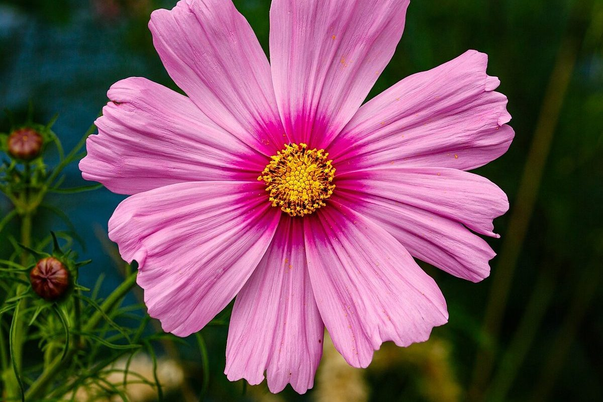

Cafe空色花
このページの作り
空色の台紙に、花を一輪ずつ貼る。
「空色」と「花」という屋号から、制作側が連想したデザインです。お店の理念や屋号の由来とは無関係で、お店の実際の様子を示すものではありません。
ページ全体を「空色の台紙」に見立て、上に空、下に花を並べました。花の写真はすべてフリー素材のイメージで、お店のものではありません。
台紙 No.1〜4
空と花のイメージ

No.1 空色

No.2 青の房

No.3 桃色

No.4 白
ご案内
お店のこと(確認できたものだけ)
| 所在地 | 〒848-0022 佐賀県伊万里市大坪町乙 上古賀1070-1 |
|---|---|
| 電話 | 0955-23-2765 |
| 営業時間 | 準備中 |
| 定休日 | 準備中 |
| ご予約 | 準備中 |
| 駐車場 | 準備中 |
| SNS | Instagram @cafe_cuusikika |